Symboldiagramm mit Farbtransparenz
Zusammenfassung
Dieses Tutorial zeigt Ihnen, wie Sie ein Symboldiagramm mit Farbtransparenz, kategorialer Legende und Blasenskala erstellen. Dieses Diagramm zeigt ein Symboldiagramm der XY-Daten an, bei dem die Größe der Symbole und die Farbe in zwei anderen Datenspalten in dem Arbeitsblatt abgebildet worden sind: Mass und Type. Die kategoriale Legende kann verwendet werden, um den Typ über die Farbe zu identifizieren. Die Blasenskala dient dazu, die Masse über die Symbolgröße abzulesen. Die Farbtransparenz wurde auf die Zeichnung angewendet, so dass die sich überschneidenden Datenpunkte sichtbar sind.
-
- 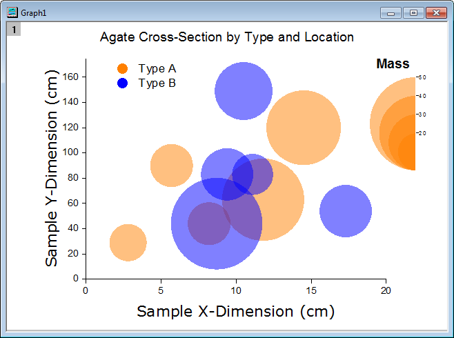
Origin-Version mind. erforderlich: Origin 2015 SR0
Was Sie lernen werden
Dieses Tutorial zeigt Ihnen, wie Sie:
- die Größe und Farbe der Zeichnungssymbole mit den Werten aus den Arbeitsblattspalten steuern,
- eine Legende aus kategorialen Werten hinzufügen,
- eine Blasenskala hinzufügen und diese benutzerdefiniert anpassen,
- die Transparenz für das Symboldiagramm festlegen,
- einen Rahmen zu dem Diagramm hinzufügen.
Schritte
Dieses Tutorial basiert auf dem Projekt: <Origin-Verzeichnis>\Samples\Tutorial Data.opj.
Sie können dieses Diagramm auch im Lernzentrum finden. (Wählen Sie Hilfe: Lernzentrum im Menü oder drücken Sie die Taste F11. Öffnen Sie dann Diagrammbeispiel: Line and Symbol)
- Öffnen Sie Tutorial Data.opj und navigieren Sie zu dem Ordner Bubble with Transparency im Projekt Explorer.
- Aktivieren Sie Book2G, markieren Sie die Spalten Col(A)~Col(C) im Arbeitsblatt und wählen Zeichnen: Einfache 2D: Blasendiagramm im Hauptmenü.
- Wählen Sie Format: Zeichnung im Hauptmenü, um den Dialog Details Zeichnung zu öffnen. Wechseln Sie dann zur Registerkarte Symbole und legen Sie das Symbolformat folgendermaßen fest:
- Setzen Sie den Skalierungsfaktor auf 3.
- Die Symbolgalerie öffnen Sie, indem Sie auf den nach unten zeigenden Pfeil neben dem Feld Vorschau klicken. Wählen Sie das Symbol des gefüllten Kreises aus.
- Wählen Sie in der Auswahlliste Symbolfarbe die Option Index: Col("Type").
- Setzen Sie die Transparenz auf 50 %.
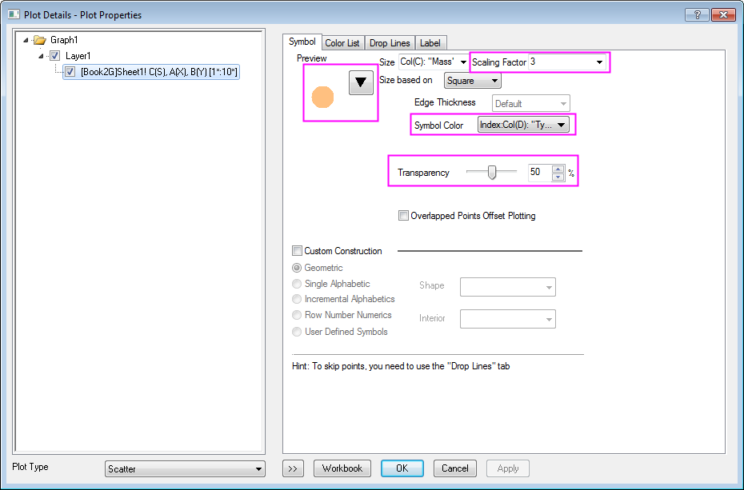
- Klicken Sie auf OK, um diese Einstellungen zu speichern und den Dialog zu schließen. Das Diagramm sollte nun folgendermaßen aussehen:
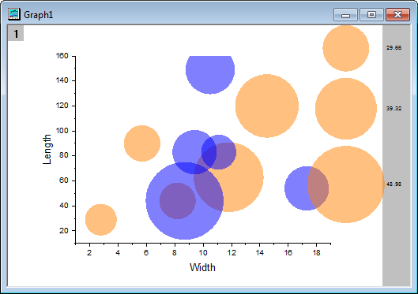
- Um die Achsenskalierungen und -titel zu aktualisieren, wählen Sie Format: Achsen: X-Achse, um den Dialog Achsen zu öffnen. Ändern Sie dann die folgenden Einstellungen:
- Legen Sie auf der Registerkarte Skalierung für die Y-Achse die folgenden Einstellungen fest:
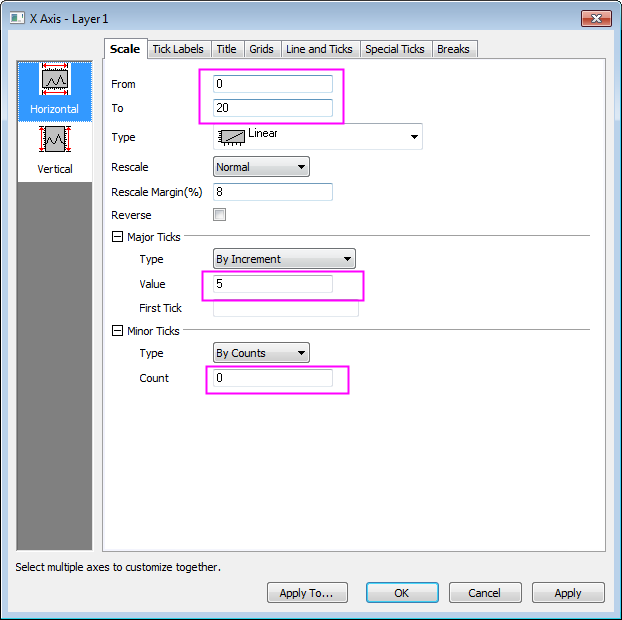
- Klicken Sie auf das Symbol Vertikal im linken Bedienfeld, gehen Sie zur Registerkarte Skalierung der Y-Achse und nehmen Sie die folgenden Einstellungen vor:
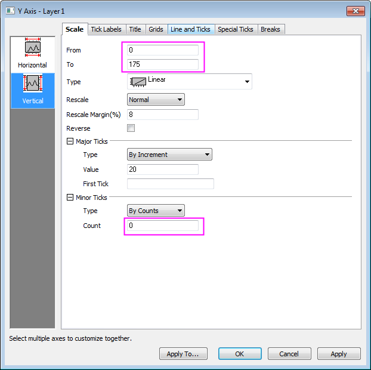
- Gehen Sie zur Registerkarte Titel und ändern Sie den Titel der Y-Achse in Sample Y-Dimension (cm). Legen Sie die Schriftart und -größe folgendermaßen fest:
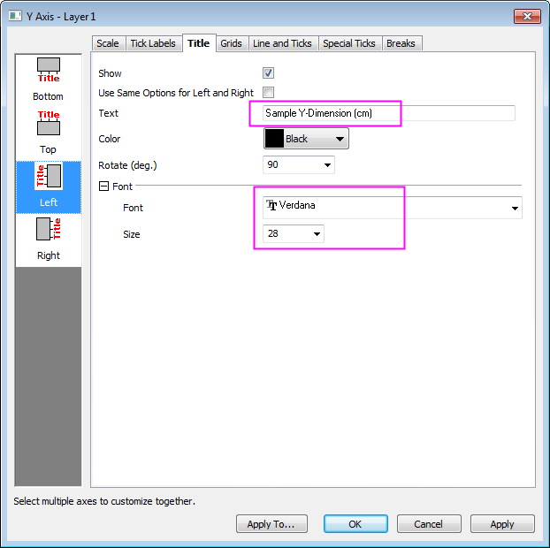
- Klicken Sie dann auf das Symbol Unten im linken Bedienfeld und ändern Sie den Titel der X-Achse in Sample X-Dimension (cm). Legen Sie die Schriftart und -größe folgendermaßen fest:
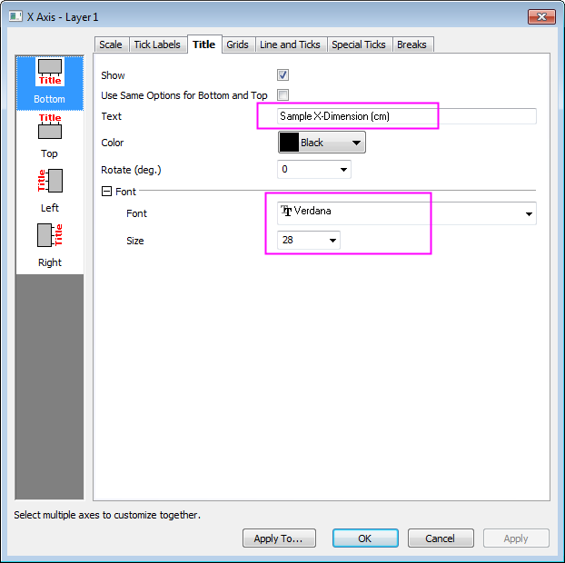
- Klicken Sie auf OK, um diese Einstellungen anzuwenden.
- Klicken Sie doppelt auf die Blasenskala, um den Dialog Eigenschaften Blasenskala zu öffnen. Wählen Sie die Option Geschachtelt in der Auswahlliste Layout und aktivieren Sie die Kontrollkästchen Halber Kreis und Verbindungslinie zeigen. Klicken Sie auf Anwenden, wie im Folgenden gezeigt: 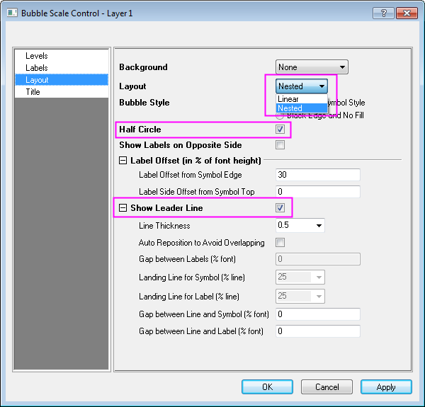
- Gehen Sie im linken Bedienfeld zur Seite Ebenen, setzen Sie Von auf 20 und Bis auf 50 und ändern Sie den Wert des Inkrements in 10: 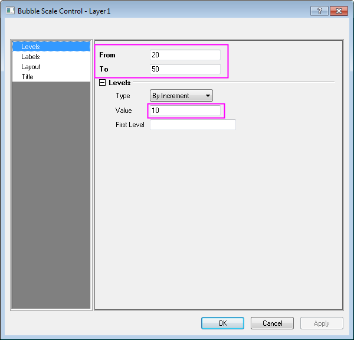
- Klicken Sie im linken Bedienfeld auf Titel, aktivieren Sie das Kontrollkästchen Zeigen und ändern Sie den Inhalt von Titel in Mass. Setzen Sie die Größe dann auf 28 und aktivieren Sie das Kontrollkästchen Fett. Klicken Sie auf OK, um den Dialog zu schließen, wie im Folgenden gezeigt: 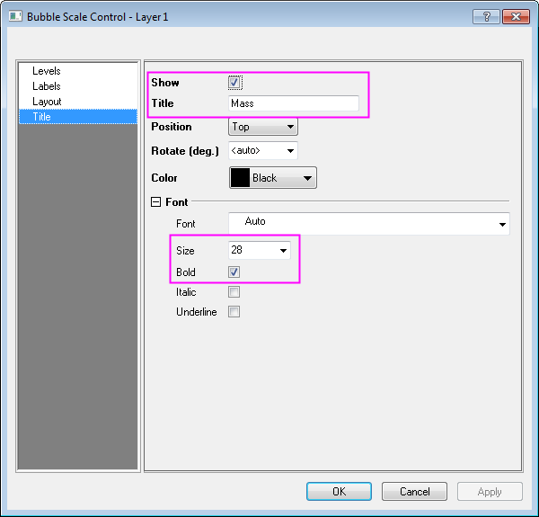
- Das Diagramm sieht folgendermaßen aus: 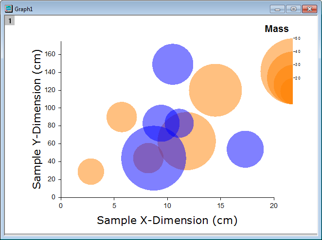
- Wählen Sie Grafik: Legende: Kategoriale Werte..., um den Dialog Graph Manipulation:legendcat aufzurufen. Deaktivieren Sie das Kontrollkästchen Größe und klicken Sie auf OK, um den Dialog zu schließen, und verschieben Sie die erzeugte Legende in eine geeignete Position in der oberen linken Ecke.
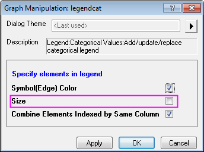
- Klicken Sie mit der rechten Maustaste auf die Legende und wählen Sie im Kontextmenü die Option Einstellungen. Passen Sie den Text, wie unten gezeigt, benutzerdefiniert an:
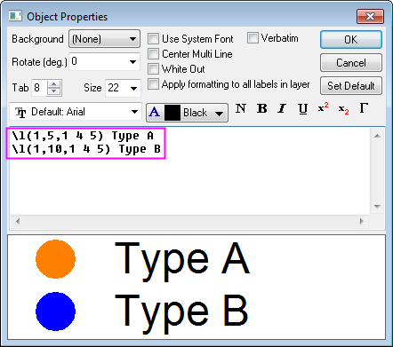
- Klicken Sie auf OK, um den Dialog zu schließen.
- Wählen Sie das Hilfsmittel Text
 auf der Symbolleiste Hilfsmittel und klicken Sie einmal auf eine Stelle links von der Seite knapp oberhalb des Rahmens. Geben Sie Folgendes in das Textobjekt ein: Agate Cross-Section by Type and Location. Passen Sie die Achse benutzerdefiniert an. Markieren Sie das Textobjekt und positionieren Sie es wie gewünscht neu.
auf der Symbolleiste Hilfsmittel und klicken Sie einmal auf eine Stelle links von der Seite knapp oberhalb des Rahmens. Geben Sie Folgendes in das Textobjekt ein: Agate Cross-Section by Type and Location. Passen Sie die Achse benutzerdefiniert an. Markieren Sie das Textobjekt und positionieren Sie es wie gewünscht neu.
Das Ergebnisdiagramm sollte folgendermaßen aussehen: